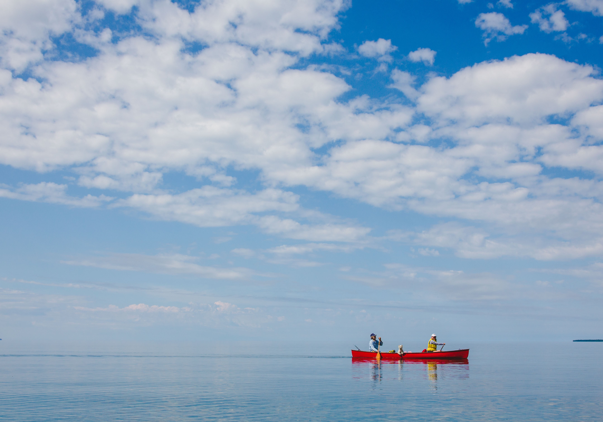
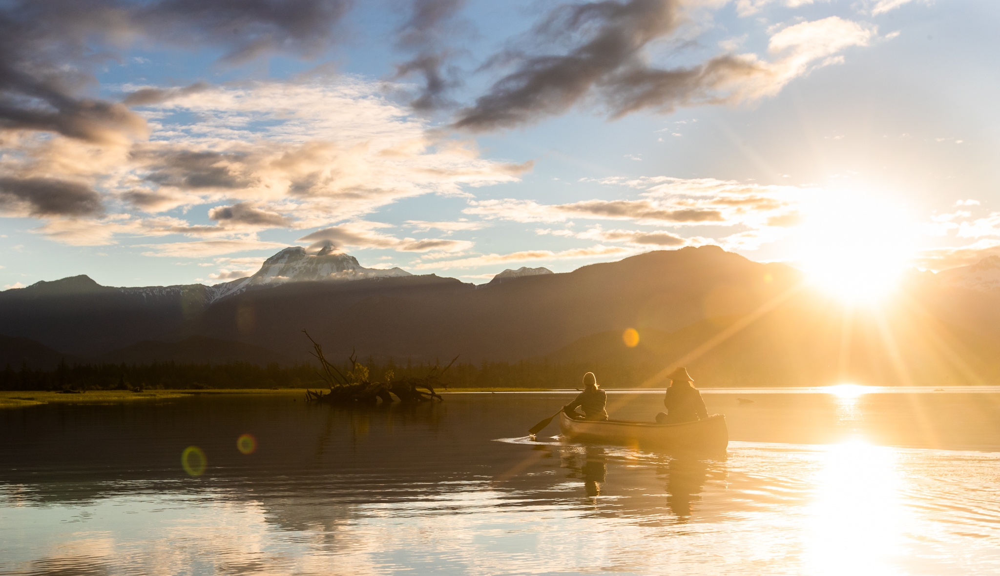

Local Guide
Squamish has more good water than most towns have streets.
Within a short drive of downtown you’ve got warm forest lakes, a tidal estuary under the Stawamus Chief, a big glacial river, and the whole of Howe Sound. We deliver canoes and paddleboards to all of them, so here’s our honest take on where to go and who each spot suits.
The quick picks
- First time in a canoe or on a SUP: Cat Lake, Brohm Lake or Alice Lake.
- Camping weekend: Alice Lake Provincial Park.
- Sunset paddle: Browning Lake (Murrin Park) or the Estuary.
- Experienced paddlers: the Squamish River or Howe Sound.
Alice Lake Provincial Park
Our most-requested multi-day delivery. The park has four lakes, a big campground and easy launches, so you can paddle in the morning, swim in the afternoon and do it all again tomorrow. It’s a great family spot. Book campsites early; summer weekends fill up fast through BC Parks.

Cat Lake
Small, calm and motor-free, just north of town. Cat Lake is the easiest water in the area for a first paddle or for kids on a paddleboard. It warms up nicely in summer.
Brohm Lake
A warm summer lake with a forest trail looping the shoreline and rocks to swim from. It’s a favourite for a half-day of paddling, swimming and a picnic.
Browning Lake (Murrin Park)
A small, quiet lake in Murrin Provincial Park with granite cliffs right off the water and good evening light. It’s short on space for long paddles but big on scenery, and it’s right off the highway on the way into town.

The Squamish Estuary
Glass-flat water at dawn with the Chief overhead. The Estuary is tidal, so check the tide times and plan to paddle with them, not against them. Go early: the wind often picks up in summer afternoons. Remember it’s a protected wildlife area, so give birds and seals plenty of room.
Howe Sound (Britannia Beach & Porteau Cove)
Paddling the ocean along the Sea to Sky is unforgettable, and it’s also open water with wind, waves, tides and boat wakes. We recommend at least one prior paddling trip before heading out on the Sound, and checking the marine forecast first. Howe Sound overnight trips are some of our favourite bookings for experienced groups.
The Squamish River
A real river with real current, for intermediate paddlers only. We deliver upstream and arrange pickup downstream, and it’s also the way to the Echo Lake trailhead. If you’ve never paddled moving water, start on a lake.

Canoe or paddleboard?
Canoes fit up to 3 paddlers, carry a cooler and a dog, and are steadier for families and anyone nervous about balance. Paddleboards are great for solo paddlers, fitness and swimming off the board. Can’t decide? Plenty of groups rent a mix.
Every delivery includes
- Canoe or paddleboard, paddles and PFDs (life jackets)
- A bailer and safety whistle for canoes; a leash and whistle for SUPs
- Local advice on the best launch and timing
Delivery is priced by location. Tell us where you’re headed and we’ll quote it.